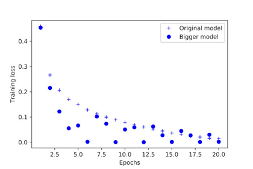

This chapter covers
After the three practical examples in chapter 3, you should be starting to feel familiar with how to approach classification and regression problems using neural networks, and you’ve witnessed the central problem of machine learning: overfitting. This chapter will formalize some of your new intuition into a solid conceptual framework for attacking and solving deep-learning problems. We’ll consolidate all of these concepts—model evaluation, data preprocessing and feature engineering, and tackling overfitting—into a detailed seven-step workflow for tackling any machine-learning task.
In our previous examples, you’ve become familiar with three specific types of machine-learning problems: binary classification, multiclass classification, and scalar regression. All three are instances of supervised learning, where the goal is to learn the relationship between training inputs and training targets.
Supervised learning is just the tip of the iceberg—machine learning is a vast field with a complex subfield taxonomy. Machine-learning algorithms generally fall into four broad categories, described in the following sections.
This is by far the most common case. It consists of learning to map input data to known targets (also called annotations), given a set of examples (often annotated by humans). All four examples you’ve encountered in this book so far were canonical examples of supervised learning. Generally, almost all applications of deep learning that are in the spotlight these days belong in this category, such as optical character recognition, speech recognition, image classification, and language translation.
Although supervised learning mostly consists of classification and regression, there are more exotic variants as well, including the following (with examples):
This branch of machine learning consists of finding interesting transformations of the input data without the help of any targets, for the purposes of data visualization, data compression, or data denoising, or to better understand the correlations present in the data at hand. Unsupervised learning is the bread and butter of data analytics, and it’s often a necessary step in better understanding a dataset before attempting to solve a supervised-learning problem. Dimensionality reduction and clustering are well-known categories of unsupervised learning.
This is a specific instance of supervised learning, but it’s different enough that it deserves its own category. Self-supervised learning is supervised learning without human-annotated labels—you can think of it as supervised learning without any humans in the loop. There are still labels involved (because the learning has to be supervised by something), but they’re generated from the input data, typically using a heuristic algorithm.
For instance, autoencoders are a well-known instance of self-supervised learning, where the generated targets are the input, unmodified. In the same way, trying to predict the next frame in a video, given past frames, or the next word in a text, given previous words, are instances of self-supervised learning (temporally supervised learning, in this case: supervision comes from future input data). Note that the distinction between supervised, self-supervised, and unsupervised learning can be blurry sometimes—these categories are more of a continuum without solid borders. Self-supervised learning can be reinterpreted as either supervised or unsupervised learning, depending on whether you pay attention to the learning mechanism or to the context of its application.
Note
In this book, we’ll focus specifically on supervised learning, because it’s by far the dominant form of deep learning today, with a wide range of industry applications. We’ll also take a briefer look at self-supervised learning in later chapters.
Long overlooked, this branch of machine learning recently started to get a lot of attention after Google DeepMind successfully applied it to learning to play Atari games (and, later, learning to play Go at the highest level). In reinforcement learning, an agent receives information about its environment and learns to choose actions that will maximize some reward. For instance, a neural network that “looks” at a video-game screen and outputs game actions in order to maximize its score can be trained via reinforcement learning.
Currently, reinforcement learning is mostly a research area and hasn’t yet had significant practical successes beyond games. In time, however, we expect to see reinforcement learning take over an increasingly large range of real-world applications: self-driving cars, robotics, resource management, education, and so on. It’s an idea whose time has come, or will come soon.
Classification and regression involve many specialized terms. You’ve come across some of them in earlier examples, and you’ll see more of them in future chapters. They have precise, machine-learning-specific definitions, and you should be familiar with them:
In the three examples presented in chapter 3, we split the data into a training set, a validation set, and a test set. The reason not to evaluate the models on the same data they were trained on quickly became evident: after just a few epochs, all three models began to overfit. That is, their performance on never-before-seen data started stalling (or worsening) compared to their performance on the training data—which always improves as training progresses.
In machine learning, the goal is to achieve models that generalize—that perform well on never-before-seen data—and overfitting is the central obstacle. You can only control that which you can observe, so it’s crucial to be able to reliably measure the generalization power of your model. The following sections look at strategies for mitigating overfitting and maximizing generalization. In this section, we’ll focus on how to measure generalization: how to evaluate machine-learning models.
Evaluating a model always boils down to splitting the available data into three sets: training, validation, and test. You train on the training data and evaluate your model on the validation data. Once your model is ready for prime time, you test it one final time on the test data.
You may ask, why not have two sets: a training set and a test set? You’d train on the training data and evaluate on the test data. Much simpler!
The reason is that developing a model always involves tuning its configuration: for example, choosing the number of layers or the size of the layers (called the hyper-parameters of the model, to distinguish them from the parameters, which are the network’s weights). You do this tuning by using as a feedback signal the performance of the model on the validation data. In essence, this tuning is a form of learning: a search for a good configuration in some parameter space. As a result, tuning the configuration of the model based on its performance on the validation set can quickly result in overfitting to the validation set, even though your model is never directly trained on it.
Central to this phenomenon is the notion of information leaks. Every time you tune a hyperparameter of your model based on the model’s performance on the validation set, some information about the validation data leaks into the model. If you do this only once, for one parameter, then very few bits of information will leak, and your validation set will remain reliable to evaluate the model. But if you repeat this many times—running one experiment, evaluating on the validation set, and modifying your model as a result—then you’ll leak an increasingly significant amount of information about the validation set into the model.
At the end of the day, you’ll end up with a model that performs artificially well on the validation data, because that’s what you optimized it for. You care about performance on completely new data, not the validation data, so you need to use a completely different, never-before-seen dataset to evaluate the model: the test dataset. Your model shouldn’t have had access to any information about the test set, even indirectly. If anything about the model has been tuned based on test set performance, then your measure of generalization will be flawed.
Splitting your data into training, validation, and test sets may seem straightforward, but there are a few advanced ways to do it that can come in handy when little data is available. Let’s review three classic evaluation recipes: simple hold-out validation, K-fold validation, and iterated K-fold validation with shuffling.
Set apart some fraction of your data as your test set. Train on the remaining data, and evaluate on the test set. As you saw in the previous sections, in order to prevent information leaks, you shouldn’t tune your model based on the test set, and therefore you should also reserve a validation set.
Schematically, hold-out validation looks like figure 4.1. The following listing shows a simple implementation.
Figure 4.1. Simple hold-out validation split
Listing 4.1. Hold-out validation
num_validation_samples = 10000 np.random.shuffle(data) ❶ validation_data = data[:num_validation_samples] ❷ data = data[num_validation_samples:] training_data = data[:] ❸ model = get_model() ❹ model.train(training_data) ❹ validation_score = model.evaluate(validation_data) ❹ # At this point you can tune your model, # retrain it, evaluate it, tune it again... model = get_model() ❺ model.train(np.concatenate([training_data, ❺ validation_data])) ❺ test_score = model.evaluate(test_data) ❺
❶ Shuffling the data is usually appropriate.
❷ Defines the validation set
❹ Trains a model on the training data, and evaluates it on the validation data
❺ Once you’ve tuned your hyperparameters, it’s common to train your final model from scratch on all non-test data available.
This is the simplest evaluation protocol, and it suffers from one flaw: if little data is available, then your validation and test sets may contain too few samples to be statistically representative of the data at hand. This is easy to recognize: if different random shuffling rounds of the data before splitting end up yielding very different measures of model performance, then you’re having this issue. K-fold validation and iterated K-fold validation are two ways to address this, as discussed next.
With this approach, you split your data into K partitions of equal size. For each partition i, train a model on the remaining K – 1 partitions, and evaluate it on partition i. Your final score is then the averages of the K scores obtained. This method is helpful when the performance of your model shows significant variance based on your train-test split. Like hold-out validation, this method doesn’t exempt you from using a distinct validation set for model calibration.
Schematically, K-fold cross-validation looks like figure 4.2. Listing 4.2 shows a simple implementation.
Figure 4.2. Three-fold validation
Listing 4.2. K-fold cross-validation
k = 4
num_validation_samples = len(data) // k
np.random.shuffle(data)
validation_scores = []
for fold in range(k):
validation_data = data[num_validation_samples * fold: ❶
num_validation_samples * (fold + 1)] ❶
training_data = data[:num_validation_samples * fold] + ❷
data[num_validation_samples * (fold + 1):] ❷
model = get_model() ❸
model.train(training_data)
validation_score = model.evaluate(validation_data)
validation_scores.append(validation_score)
validation_score = np.average(validation_scores) ❹
model = get_model() ❺
model.train(data) ❺
test_score = model.evaluate(test_data) ❺
❶ Selects the validation-data partition
❷ Uses the remainder of the data as training data. Note that the + operator is list concatenation, not summation.
❸ Creates a brand-new instance of the model (untrained)
❹ Validation score: average of the validation scores of the k folds
❺ Trains the final model on all non-test data available
Iterated K-fold validation with shuffling
This one is for situations in which you have relatively little data available and you need to evaluate your model as precisely as possible. I’ve found it to be extremely helpful in Kaggle competitions. It consists of applying K-fold validation multiple times, shuffling the data every time before splitting it K ways. The final score is the average of the scores obtained at each run of K-fold validation. Note that you end up training and evaluating P × K models (where P is the number of iterations you use), which can be very expensive.
Keep an eye out for the following when you’re choosing an evaluation protocol:
In addition to model evaluation, an important question we must tackle before we dive deeper into model development is the following: how do you prepare the input data and targets before feeding them into a neural network? Many data-preprocessing and feature-engineering techniques are domain specific (for example, specific to text data or image data); we’ll cover those in the following chapters as we encounter them in practical examples. For now, we’ll review the basics that are common to all data domains.
Data preprocessing aims at making the raw data at hand more amenable to neural networks. This includes vectorization, normalization, handling missing values, and feature extraction.
All inputs and targets in a neural network must be tensors of floating-point data (or, in specific cases, tensors of integers). Whatever data you need to process—sound, images, text—you must first turn into tensors, a step called data vectorization. For instance, in the two previous text-classification examples, we started from text represented as lists of integers (standing for sequences of words), and we used one-hot encoding to turn them into a tensor of float32 data. In the examples of classifying digits and predicting house prices, the data already came in vectorized form, so you were able to skip this step.
In the digit-classification example, you started from image data encoded as integers in the 0–255 range, encoding grayscale values. Before you fed this data into your network, you had to cast it to float32 and divide by 255 so you’d end up with floating-point values in the 0–1 range. Similarly, when predicting house prices, you started from features that took a variety of ranges—some features had small floating-point values, others had fairly large integer values. Before you fed this data into your network, you had to normalize each feature independently so that it had a standard deviation of 1 and a mean of 0.
In general, it isn’t safe to feed into a neural network data that takes relatively large values (for example, multidigit integers, which are much larger than the initial values taken by the weights of a network) or data that is heterogeneous (for example, data where one feature is in the range 0–1 and another is in the range 100–200). Doing so can trigger large gradient updates that will prevent the network from converging. To make learning easier for your network, your data should have the following characteristics:
Additionally, the following stricter normalization practice is common and can help, although it isn’t always necessary (for example, you didn’t do this in the digit-classification example):
This is easy to do with Numpy arrays:
x -= x.mean(axis=0) ❶
x /= x.std(axis=0)
❶ Assuming x is a 2D data matrix of shape (samples, features)
You may sometimes have missing values in your data. For instance, in the house-price example, the first feature (the column of index 0 in the data) was the per capita crime rate. What if this feature wasn’t available for all samples? You’d then have missing values in the training or test data.
In general, with neural networks, it’s safe to input missing values as 0, with the condition that 0 isn’t already a meaningful value. The network will learn from exposure to the data that the value 0 means missing data and will start ignoring the value.
Note that if you’re expecting missing values in the test data, but the network was trained on data without any missing values, the network won’t have learned to ignore missing values! In this situation, you should artificially generate training samples with missing entries: copy some training samples several times, and drop some of the features that you expect are likely to be missing in the test data.
Feature engineering is the process of using your own knowledge about the data and about the machine-learning algorithm at hand (in this case, a neural network) to make the algorithm work better by applying hardcoded (nonlearned) transformations to the data before it goes into the model. In many cases, it isn’t reasonable to expect a machine-learning model to be able to learn from completely arbitrary data. The data needs to be presented to the model in a way that will make the model’s job easier.
Let’s look at an intuitive example. Suppose you’re trying to develop a model that can take as input an image of a clock and can output the time of day (see figure 4.3).
Figure 4.3. Feature engineering for reading the time on a clock
If you choose to use the raw pixels of the image as input data, then you have a difficult machine-learning problem on your hands. You’ll need a convolutional neural network to solve it, and you’ll have to expend quite a bit of computational resources to train the network.
But if you already understand the problem at a high level (you understand how humans read time on a clock face), then you can come up with much better input features for a machine-learning algorithm: for instance, it’s easy to write a five-line Python script to follow the black pixels of the clock hands and output the (x, y) coordinates of the tip of each hand. Then a simple machine-learning algorithm can learn to associate these coordinates with the appropriate time of day.
You can go even further: do a coordinate change, and express the (x, y) coordinates as polar coordinates with regard to the center of the image. Your input will become the angle theta of each clock hand. At this point, your features are making the problem so easy that no machine learning is required; a simple rounding operation and dictionary lookup are enough to recover the approximate time of day.
That’s the essence of feature engineering: making a problem easier by expressing it in a simpler way. It usually requires understanding the problem in depth.
Before deep learning, feature engineering used to be critical, because classical shallow algorithms didn’t have hypothesis spaces rich enough to learn useful features by themselves. The way you presented the data to the algorithm was essential to its success. For instance, before convolutional neural networks became successful on the MNIST digit-classification problem, solutions were typically based on hardcoded features such as the number of loops in a digit image, the height of each digit in an image, a histogram of pixel values, and so on.
Fortunately, modern deep learning removes the need for most feature engineering, because neural networks are capable of automatically extracting useful features from raw data. Does this mean you don’t have to worry about feature engineering as long as you’re using deep neural networks? No, for two reasons:
In all three examples in the previous chapter—predicting movie reviews, topic classification, and house-price regression—the performance of the model on the held-out validation data always peaked after a few epochs and then began to degrade: the model quickly started to overfit to the training data. Overfitting happens in every machine-learning problem. Learning how to deal with overfitting is essential to mastering machine learning.
The fundamental issue in machine learning is the tension between optimization and generalization. Optimization refers to the process of adjusting a model to get the best performance possible on the training data (the learning in machine learning), whereas generalization refers to how well the trained model performs on data it has never seen before. The goal of the game is to get good generalization, of course, but you don’t control generalization; you can only adjust the model based on its training data.
At the beginning of training, optimization and generalization are correlated: the lower the loss on training data, the lower the loss on test data. While this is happening, your model is said to be underfit: there is still progress to be made; the network hasn’t yet modeled all relevant patterns in the training data. But after a certain number of iterations on the training data, generalization stops improving, and validation metrics stall and then begin to degrade: the model is starting to overfit. That is, it’s beginning to learn patterns that are specific to the training data but that are misleading or irrelevant when it comes to new data.
To prevent a model from learning misleading or irrelevant patterns found in the training data, the best solution is to get more training data. A model trained on more data will naturally generalize better. When that isn’t possible, the next-best solution is to modulate the quantity of information that your model is allowed to store or to add constraints on what information it’s allowed to store. If a network can only afford to memorize a small number of patterns, the optimization process will force it to focus on the most prominent patterns, which have a better chance of generalizing well.
The processing of fighting overfitting this way is called regularization. Let’s review some of the most common regularization techniques and apply them in practice to improve the movie-classification model from section 3.4.
The simplest way to prevent overfitting is to reduce the size of the model: the number of learnable parameters in the model (which is determined by the number of layers and the number of units per layer). In deep learning, the number of learnable parameters in a model is often referred to as the model’s capacity. Intuitively, a model with more parameters has more memorization capacity and therefore can easily learn a perfect dictionary-like mapping between training samples and their targets—a mapping without any generalization power. For instance, a model with 500,000 binary parameters could easily be made to learn the class of every digit in the MNIST training set: we’d need only 10 binary parameters for each of the 50,000 digits. But such a model would be useless for classifying new digit samples. Always keep this in mind: deep-learning models tend to be good at fitting to the training data, but the real challenge is generalization, not fitting.
On the other hand, if the network has limited memorization resources, it won’t be able to learn this mapping as easily; thus, in order to minimize its loss, it will have to resort to learning compressed representations that have predictive power regarding the targets—precisely the type of representations we’re interested in. At the same time, keep in mind that you should use models that have enough parameters that they don’t underfit: your model shouldn’t be starved for memorization resources. There is a compromise to be found between too much capacity and not enough capacity.
Unfortunately, there is no magical formula to determine the right number of layers or the right size for each layer. You must evaluate an array of different architectures (on your validation set, not on your test set, of course) in order to find the correct model size for your data. The general workflow to find an appropriate model size is to start with relatively few layers and parameters, and increase the size of the layers or add new layers until you see diminishing returns with regard to validation loss.
Let’s try this on the movie-review classification network. The original network is shown next.
from keras import models from keras import layers model = models.Sequential() model.add(layers.Dense(16, activation='relu', input_shape=(10000,))) model.add(layers.Dense(16, activation='relu')) model.add(layers.Dense(1, activation='sigmoid'))
Now let’s try to replace it with this smaller network.
Listing 4.4. Version of the model with lower capacity
model = models.Sequential() model.add(layers.Dense(4, activation='relu', input_shape=(10000,))) model.add(layers.Dense(4, activation='relu')) model.add(layers.Dense(1, activation='sigmoid'))
Figure 4.4 shows a comparison of the validation losses of the original network and the smaller network. The dots are the validation loss values of the smaller network, and the crosses are the initial network (remember, a lower validation loss signals a better model).
Figure 4.4. Effect of model capacity on validation loss: trying a smaller model
As you can see, the smaller network starts overfitting later than the reference network (after six epochs rather than four), and its performance degrades more slowly once it starts overfitting.
Now, for kicks, let’s add to this benchmark a network that has much more capacity—far more than the problem warrants.
Listing 4.5. Version of the model with higher capacity
model = models.Sequential() model.add(layers.Dense(512, activation='relu', input_shape=(10000,))) model.add(layers.Dense(512, activation='relu')) model.add(layers.Dense(1, activation='sigmoid'))
Figure 4.5 shows how the bigger network fares compared to the reference network. The dots are the validation loss values of the bigger network, and the crosses are the initial network.
Figure 4.5. Effect of model capacity on validation loss: trying a bigger model
The bigger network starts overfitting almost immediately, after just one epoch, and it overfits much more severely. Its validation loss is also noisier.
Meanwhile, figure 4.6 shows the training losses for the two networks. As you can see, the bigger network gets its training loss near zero very quickly. The more capacity the network has, the more quickly it can model the training data (resulting in a low training loss), but the more susceptible it is to overfitting (resulting in a large difference between the training and validation loss).
Figure 4.6. Effect of model capacity on training loss: trying a bigger model

You may be familiar with the principle of Occam’s razor: given two explanations for something, the explanation most likely to be correct is the simplest one—the one that makes fewer assumptions. This idea also applies to the models learned by neural networks: given some training data and a network architecture, multiple sets of weight values (multiple models) could explain the data. Simpler models are less likely to overfit than complex ones.
A simple model in this context is a model where the distribution of parameter values has less entropy (or a model with fewer parameters, as you saw in the previous section). Thus a common way to mitigate overfitting is to put constraints on the complexity of a network by forcing its weights to take only small values, which makes the distribution of weight values more regular. This is called weight regularization, and it’s done by adding to the loss function of the network a cost associated with having large weights. This cost comes in two flavors:
In Keras, weight regularization is added by passing weight regularizer instances to layers as keyword arguments. Let’s add L2 weight regularization to the movie-review classification network.
Listing 4.6. Adding L2 weight regularization to the model
from keras import regularizers
model = models.Sequential()
model.add(layers.Dense(16, kernel_regularizer=regularizers.l2(0.001),
activation='relu', input_shape=(10000,)))
model.add(layers.Dense(16, kernel_regularizer=regularizers.l2(0.001),
activation='relu'))
model.add(layers.Dense(1, activation='sigmoid'))
l2(0.001) means every coefficient in the weight matrix of the layer will add 0.001 * weight_coefficient_value to the total loss of the network. Note that because this penalty is only added at training time, the loss for this network will be much higher at training than at test time.
Figure 4.7 shows the impact of the L2 regularization penalty. As you can see, the model with L2 regularization (dots) has become much more resistant to overfitting than the reference model (crosses), even though both models have the same number of parameters.
Figure 4.7. Effect of L2 weight regularization on validation loss
As an alternative to L2 regularization, you can use one of the following Keras weight regularizers.
Listing 4.7. Different weight regularizers available in Keras
from keras import regularizers regularizers.l1(0.001) ❶ regularizers.l1_l2(l1=0.001, l2=0.001) ❷
❶ L1 regularization
❷ Simultaneous L1 and L2 regularization
Dropout is one of the most effective and most commonly used regularization techniques for neural networks, developed by Geoff Hinton and his students at the University of Toronto. Dropout, applied to a layer, consists of randomly dropping out (setting to zero) a number of output features of the layer during training. Let’s say a given layer would normally return a vector [0.2, 0.5, 1.3, 0.8, 1.1] for a given input sample during training. After applying dropout, this vector will have a few zero entries distributed at random: for example, [0, 0.5, 1.3, 0, 1.1]. The dropout rate is the fraction of the features that are zeroed out; it’s usually set between 0.2 and 0.5. At test time, no units are dropped out; instead, the layer’s output values are scaled down by a factor equal to the dropout rate, to balance for the fact that more units are active than at training time.
Consider a Numpy matrix containing the output of a layer, layer_output, of shape (batch_size, features). At training time, we zero out at random a fraction of the values in the matrix:
layer_output *= np.random.randint(0, high=2, size=layer_output.shape) ❶
❶ At training time, drops out 50% of the units in the output
At test time, we scale down the output by the dropout rate. Here, we scale by 0.5 (because we previously dropped half the units):
layer_output *= 0.5 ❶
❶ At test time
Note that this process can be implemented by doing both operations at training time and leaving the output unchanged at test time, which is often the way it’s implemented in practice (see figure 4.8):
layer_output *= np.random.randint(0, high=2, size=layer_output.shape) ❶ layer_output /= 0.5 ❷
❶ At training time
❷ Note that we’re scaling up rather scaling down in this case.
Figure 4.8. Dropout applied to an activation matrix at training time, with rescaling happening during training. At test time, the activation matrix is unchanged.
This technique may seem strange and arbitrary. Why would this help reduce overfitting? Hinton says he was inspired by, among other things, a fraud-prevention mechanism used by banks. In his own words, “I went to my bank. The tellers kept changing and I asked one of them why. He said he didn’t know but they got moved around a lot. I figured it must be because it would require cooperation between employees to successfully defraud the bank. This made me realize that randomly removing a different subset of neurons on each example would prevent conspiracies and thus reduce overfitting.”[1] The core idea is that introducing noise in the output values of a layer can break up happenstance patterns that aren’t significant (what Hinton refers to as conspiracies), which the network will start memorizing if no noise is present.
See the Reddit thread “AMA: We are the Google Brain team. We’d love to answer your questions about machine learning,” http://mng.bz/XrsS.
In Keras, you can introduce dropout in a network via the Dropout layer, which is applied to the output of the layer right before it:
model.add(layers.Dropout(0.5))
Let’s add two Dropout layers in the IMDB network to see how well they do at reducing overfitting.
Listing 4.8. Adding dropout to the IMDB network
model = models.Sequential() model.add(layers.Dense(16, activation='relu', input_shape=(10000,))) model.add(layers.Dropout(0.5)) model.add(layers.Dense(16, activation='relu')) model.add(layers.Dropout(0.5)) model.add(layers.Dense(1, activation='sigmoid'))
Figure 4.9 shows a plot of the results. Again, this is a clear improvement over the reference network.
Figure 4.9. Effect of dropout on validation loss
To recap, these are the most common ways to prevent overfitting in neural networks:
In this section, we’ll present a universal blueprint that you can use to attack and solve any machine-learning problem. The blueprint ties together the concepts you’ve learned about in this chapter: problem definition, evaluation, feature engineering, and fighting overfitting.
First, you must define the problem at hand:
You can’t move to the next stage until you know what your inputs and outputs are, and what data you’ll use. Be aware of the hypotheses you make at this stage:
Until you have a working model, these are merely hypotheses, waiting to be validated or invalidated. Not all problems can be solved; just because you’ve assembled examples of inputs X and targets Y doesn’t mean X contains enough information to predict Y. For instance, if you’re trying to predict the movements of a stock on the stock market given its recent price history, you’re unlikely to succeed, because price history doesn’t contain much predictive information.
One class of unsolvable problems you should be aware of is nonstationary problems. Suppose you’re trying to build a recommendation engine for clothing, you’re training it on one month of data (August), and you want to start generating recommendations in the winter. One big issue is that the kinds of clothes people buy change from season to season: clothes buying is a nonstationary phenomenon over the scale of a few months. What you’re trying to model changes over time. In this case, the right move is to constantly retrain your model on data from the recent past, or gather data at a timescale where the problem is stationary. For a cyclical problem like clothes buying, a few years’ worth of data will suffice to capture seasonal variation—but remember to make the time of the year an input of your model!
Keep in mind that machine learning can only be used to memorize patterns that are present in your training data. You can only recognize what you’ve seen before. Using machine learning trained on past data to predict the future is making the assumption that the future will behave like the past. That often isn’t the case.
To control something, you need to be able to observe it. To achieve success, you must define what you mean by success—accuracy? Precision and recall? Customer-retention rate? Your metric for success will guide the choice of a loss function: what your model will optimize. It should directly align with your higher-level goals, such as the success of your business.
For balanced-classification problems, where every class is equally likely, accuracy and area under the receiver operating characteristic curve (ROC AUC) are common metrics. For class-imbalanced problems, you can use precision and recall. For ranking problems or multilabel classification, you can use mean average precision. And it isn’t uncommon to have to define your own custom metric by which to measure success. To get a sense of the diversity of machine-learning success metrics and how they relate to different problem domains, it’s helpful to browse the data science competitions on Kaggle (https://kaggle.com); they showcase a wide range of problems and evaluation metrics.
Once you know what you’re aiming for, you must establish how you’ll measure your current progress. We’ve previously reviewed three common evaluation protocols:
Just pick one of these. In most cases, the first will work well enough.
Once you know what you’re training on, what you’re optimizing for, and how to evaluate your approach, you’re almost ready to begin training models. But first, you should format your data in a way that can be fed into a machine-learning model—here, we’ll assume a deep neural network:
Once your tensors of input data and target data are ready, you can begin to train models.
Your goal at this stage is to achieve statistical power: that is, to develop a small model that is capable of beating a dumb baseline. In the MNIST digit-classification example, anything that achieves an accuracy greater than 0.1 can be said to have statistical power; in the IMDB example, it’s anything with an accuracy greater than 0.5.
Note that it’s not always possible to achieve statistical power. If you can’t beat a random baseline after trying multiple reasonable architectures, it may be that the answer to the question you’re asking isn’t present in the input data. Remember that you make two hypotheses:
It may well be that these hypotheses are false, in which case you must go back to the drawing board.
Assuming that things go well, you need to make three key choices to build your first working model:
Regarding the choice of a loss function, note that it isn’t always possible to directly optimize for the metric that measures success on a problem. Sometimes there is no easy way to turn a metric into a loss function; loss functions, after all, need to be computable given only a mini-batch of data (ideally, a loss function should be computable for as little as a single data point) and must be differentiable (otherwise, you can’t use backpropagation to train your network). For instance, the widely used classification metric ROC AUC can’t be directly optimized. Hence, in classification tasks, it’s common to optimize for a proxy metric of ROC AUC, such as crossentropy. In general, you can hope that the lower the crossentropy gets, the higher the ROC AUC will be.
Table 4.1 can help you choose a last-layer activation and a loss function for a few common problem types.
Table 4.1. Choosing the right last-layer activation and loss function for your model
|
Problem type |
Last-layer activation |
Loss function |
|---|---|---|
| Binary classification | sigmoid | binary_crossentropy |
| Multiclass, single-label classification | softmax | categorical_crossentropy |
| Multiclass, multilabel classification | sigmoid | binary_crossentropy |
| Regression to arbitrary values | None | mse |
| Regression to values between 0 and 1 | sigmoid | mse or binary_crossentropy |
Once you’ve obtained a model that has statistical power, the question becomes, is your model sufficiently powerful? Does it have enough layers and parameters to properly model the problem at hand? For instance, a network with a single hidden layer with two units would have statistical power on MNIST but wouldn’t be sufficient to solve the problem well. Remember that the universal tension in machine learning is between optimization and generalization; the ideal model is one that stands right at the border between underfitting and overfitting; between undercapacity and overcapacity. To figure out where this border lies, first you must cross it.
To figure out how big a model you’ll need, you must develop a model that overfits. This is fairly easy:
Always monitor the training loss and validation loss, as well as the training and validation values for any metrics you care about. When you see that the model’s performance on the validation data begins to degrade, you’ve achieved overfitting.
The next stage is to start regularizing and tuning the model, to get as close as possible to the ideal model that neither underfits nor overfits.
This step will take the most time: you’ll repeatedly modify your model, train it, evaluate on your validation data (not the test data, at this point), modify it again, and repeat, until the model is as good as it can get. These are some things you should try:
Be mindful of the following: every time you use feedback from your validation process to tune your model, you leak information about the validation process into the model. Repeated just a few times, this is innocuous; but done systematically over many iterations, it will eventually cause your model to overfit to the validation process (even though no model is directly trained on any of the validation data). This makes the evaluation process less reliable.
Once you’ve developed a satisfactory model configuration, you can train your final production model on all the available data (training and validation) and evaluate it one last time on the test set. If it turns out that performance on the test set is significantly worse than the performance measured on the validation data, this may mean either that your validation procedure wasn’t reliable after all, or that you began overfitting to the validation data while tuning the parameters of the model. In this case, you may want to switch to a more reliable evaluation protocol (such as iterated K-fold validation).